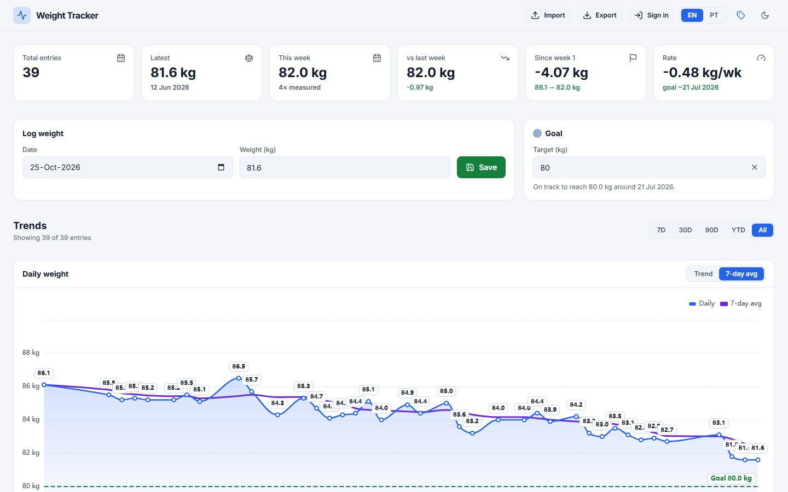
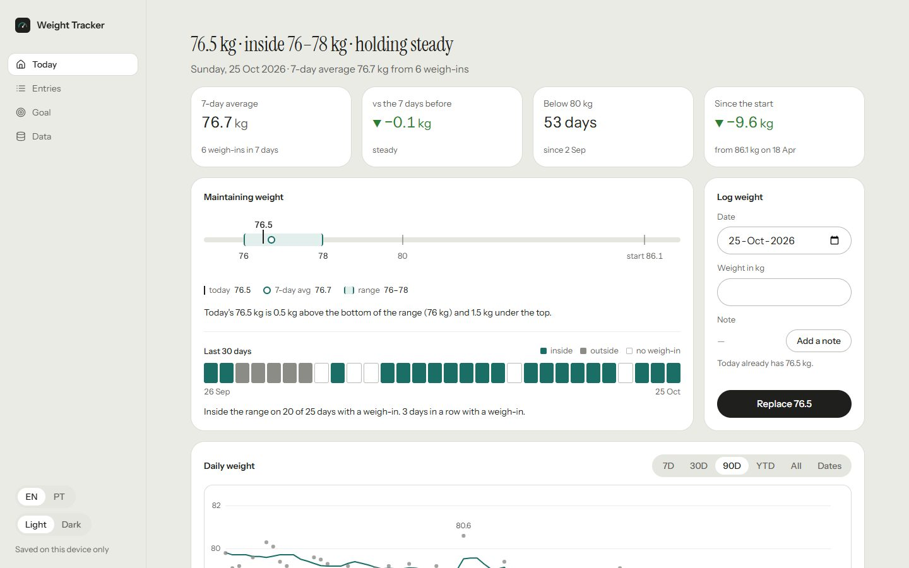
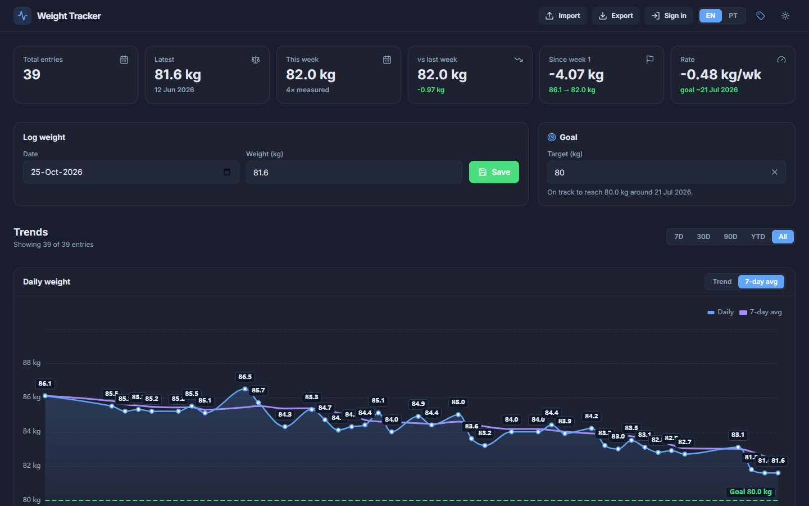
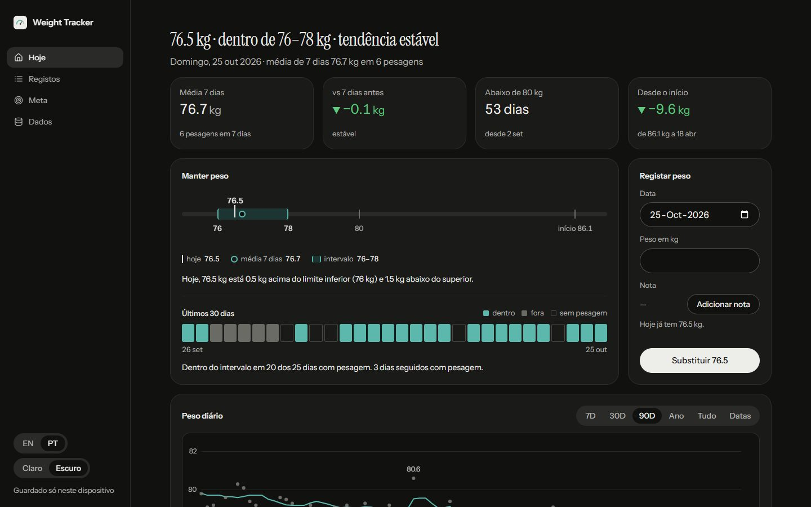
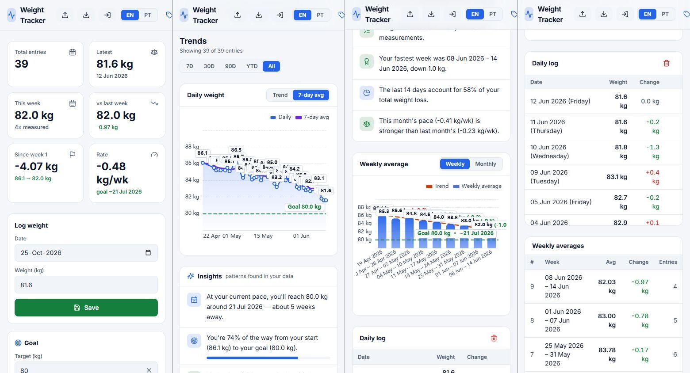
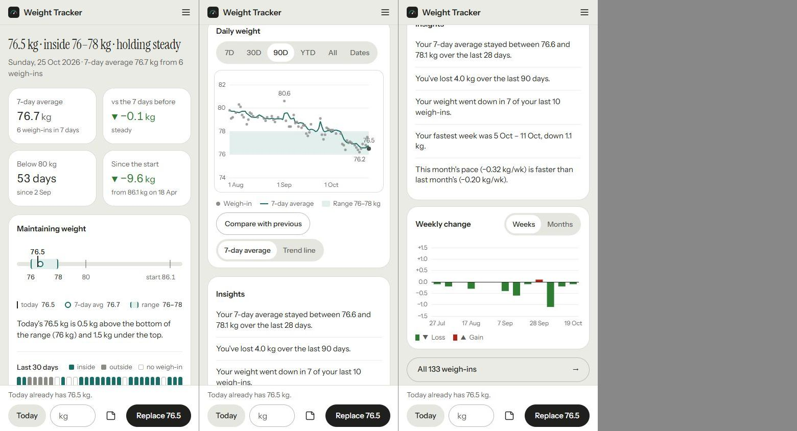

WeightTracker: antes e depois
Inspector e lint da skill, 1440 / 768 / 390 px, mesmos 133 registos. Antes: dados de abr–jun do seed antigo. Depois: estado “em manutenção”.
Inspector (ecrã Hoje)
| Verificação | Antes · claro | Antes · escuro | Depois · claro | Depois · escuro |
|---|---|---|---|---|
| Contraste (“Save” branco sobre verde 1.7:1; “7-day avg”, “Weekly” 2.5:1) | — | FAIL | ok | ok |
| Ícones em quadrados coloridos (8 ícones, 2 cores) | FAIL | FAIL | ok | ok |
| Números alinhados à esquerda (9 de 18 células) | WARN | WARN | ok | ok |
| Texto < 13 px (54% do texto) | WARN | WARN | ok | ok |
| h1 (antes: nenhum, “Weight Tracker” era um div de 16 px) | sem h1 | sem h1 | h1 32 px | h1 32 px |
| Resultado | 1 FAIL · 1 WARN | 2 FAIL · 1 WARN | 0 FAIL · 0 WARN | 0 FAIL · 0 WARN |
Estado “a caminho” (meta 75 kg): 0 FAIL · 0 WARN em claro e escuro.
Lint do código
| Padrão | Antes | Depois |
|---|---|---|
| Sombras em elementos parados | 6 | 0 |
| Desfoque de fundo (glass) | 3 | 0 |
animate-pulse no carregamento | 3 | 0 |
| Azul por defeito do Tailwind | 1 | 0 |
transition: all | 1 | 0 |
padStart (todos constroem datas ISO) | 15 | 11 |
| Travessões (traço cinzento de “sem valor” e comentários) | 29 | 7 |
| Resultado | 0 FAIL · 30 WARN | 0 FAIL · 12 WARN (justificados) |
Desktop 1440 · claro


Desktop 1440 · escuro


Telemóvel 390 · página inteira


Estado “a caminho” (meta 75 kg)